Chapter 6: a, an, the¶
a, an, the — teen chhote shabd, bada farq
Hindi me article naam ki koi cheez nahi hoti. "Main doctor hoon" — bas, kaam ho gaya. Isliye jab hum English bolte hain to dimaag wahi aadat dohra deta hai: "I am doctor." Grammar ki kitaab me ye chhoti galti lagti hai, par sunne wale ko turant pata chal jaata hai. Achhi khabar: article ka faisla sirf teen sawaal ka jawaab hai, aur wo teen sawaal is chapter me hamesha ke liye saaf ho jaayenge.
Ek line me
An article is a small word before a noun that tells the listener whether you mean any one of something (a / an) or that particular one (the). Article batata hai — "koi bhi ek" ya "wahi khaas wala".
- I need a pen. Mujhe ek pen chahiye — koi bhi pen, kaunsa farq nahi padta.
- I need the pen. Mujhe wo pen chahiye — jo dono jaante hain, wahi khaas pen.
- I need pens. Mujhe pen chahiye (general baat) — yahan koi article nahi lagta.
6.1 Faisla lene ka flowchart¶
Har baar jab aapke saamne ek noun aaye, ye teen sawaal poochho — kram se. Jawaab apne-aap mil jaayega. Shuruaat me ye dheema lagega; do hafte me ye apne-aap hone lagega.

6.2 a ya an — akshar nahi, aawaz dekho¶
Yahan sabse badi galti ye soch hai ki "vowel se shuru hone wale shabd ke pehle an lagta hai". Rule akshar ka nahi, aawaz ka hai. Bolkar dekho — agar muh se pehli aawaz vowel nikalti hai, to an.
| Shabd | Pehli aawaz | Sahi | Kyun |
|---|---|---|---|
| hour | aa- | an hour | "h" chup hai — aawaz vowel se shuru |
| honest | o- | an honest man | "h" chup hai |
| university | yu- | a university | "yu" consonant jaisi aawaz hai |
| useful | yu- | a useful book | wahi "yu" aawaz |
| one-rupee coin | wa- | a one-rupee coin | "one" = "wan", consonant aawaz |
| MBA | em- | an MBA degree | M ko "em" bolte hain — vowel aawaz |
| LIC agent | el- | an LIC agent | L = "el" |
| European | yu- | a European country | "yu" aawaz |
Short-form ka pakka test
Short form (MBA, SP, FIR, NGO, RTI) ke saath har akshar ki aawaz bolo. Jo aksharon ki aawaz vowel se shuru hoti hai — A, E, F, H, I, L, M, N, O, R, S, X — unke pehle an. Baaki ke pehle a.
an FIR · an NGO · an RTI · a BJP leader · a CA · a PhD
6.3 "the" kab lagta hai — saat pakke mauke¶
| Mauka | Example |
|---|---|
| Doosri baar zikr (pehli baar "a") | I saw a dog. The dog was limping. |
| Duniya me ek hi cheez | the sun · the moon · the sky · the earth |
| Superlative aur ordinal | the best player · the first bus |
| Nadi, samudra, pahaad ki shrinkhala, registaan | the Ganga · the Arabian Sea · the Himalayas · the Thar |
| Baaje (musical instruments) | She plays the flute. |
| Akhbaar, kitaab ke naam, imaaratein | the Hindu · the Gita · the Taj Mahal |
| Desh jiske naam me plural ya "of" ho | the Netherlands · the United States · the Republic of India |
Pehla mauka sabse zaroori hai, isliye use ek baar sun lo:
- Yesterday I met a teacher. The teacher told me about this book. Pehli baar "a teacher" — sunne wala nahi jaanta kaun. Doosri baar "the teacher" — ab jaanta hai.
6.4 Zero article — jahan kuch nahi lagta¶
Ye list yaad rakhni zaroori hai, kyunki yahan Indian English "the" ghusa deti hai jahan zaroorat nahi hoti.
| Shreni | Sahi | Galat |
|---|---|---|
| General plural | Dogs are loyal. | The dogs are loyal. |
| Uncountable (general) | Milk is good for health. | The milk is good for health. |
| Logon aur jagah ke naam | Ravi lives in Jaipur. | The Ravi lives in the Jaipur. |
| Bhasha | She speaks Marathi. | She speaks the Marathi. |
| Khel | He plays cricket. | He plays the cricket. |
| Khaana | We had lunch at two. | We had the lunch at two. |
| Sawaari — by + vehicle | I came by bus. | I came by the bus. |
| Jagah jab kaam ke liye jaayein | go to school · go to bed · go to court | go to the school (padhne ke liye) |
| Saal, mahina, din | in 2026 · on Monday · in June | in the 2026 |
'go to school' vs 'go to the school' — dono sahi, matlab alag
go to school = padhne jaana (kaam ke liye) — My son goes to school.
go to the school = us imaarat tak jaana — I went to the school to meet the principal. Yahi farq hospital, college, church, prison, court ke saath bhi chalta hai.
6.5 Ek hi noun, teen roop — farq mehsoos karo¶
| Vaakya | Matlab |
|---|---|
| A tiger is dangerous. | Koi bhi ek baagh — ek example ke taur par. |
| The tiger is dangerous. | Wo khaas baagh, jiski baat ho rahi hai. |
| Tigers are dangerous. | Baagh (poori prajaati) khatarnaak hote hain. Ye sabse natural hai. |
Ek chhota sa test
Confusion ho to apne-aap se poochho: "Kaunsa?"
Agar jawaab aata hai ("wahi jo kal laaya tha") → the.
Agar jawaab hai "koi bhi" → a / an.
Agar sawaal hi bemaani hai ("Kaunsa doodh?" — poora doodh general me) → kuch nahi.
6.6 Wo galtiyan jo hum sach me karte hain¶
Article ki top galtiyan
- Galat: I am engineer.
- Sahi: I am an engineer.
-
Kyun: Kaam-dhandha batate waqt English me article lagta hai — a doctor, an engineer, a teacher. Hindi me "main engineer hoon" kaafi hai, English me nahi.
-
Galat: He is going to the office by the bus.
- Sahi: He is going to the office by bus.
-
Kyun: "by + vehicle" ke saath article nahi — by bus, by train, by car, by auto, on foot.
-
Galat: She plays the cricket very well.
- Sahi: She plays cricket very well.
-
Kyun: Khel ke saath article nahi. Par baaje ke saath lagta hai: she plays the guitar.
-
Galat: The honesty is the best policy.
- Sahi: Honesty is the best policy.
-
Kyun: Bhaav wale uncountable nouns (honesty, love, patience, anger) general baat me bina article aate hain. Par "the best" me "the" zaroori hai — superlative hai.
-
Galat: I have a good news for you.
- Sahi: I have good news for you.
-
Kyun: "news" uncountable hai — iske pehle "a" nahi lagta. Ek khabar kehni ho to: a piece of good news.
-
Galat: She went to the home early.
- Sahi: She went home early.
-
Kyun: "home" ke saath na article lagta hai, na "to" — go home, reach home, stay home.
-
Galat: My father is a best cook in our family.
- Sahi: My father is the best cook in our family.
-
Kyun: Superlative (best, tallest, first) ke pehle hamesha "the" — kyunki wo ek hi ho sakta hai.
-
Galat: He gave me a advice.
- Sahi: He gave me some advice.
- Kyun: advice, information, furniture, luggage, equipment, work — ye sab uncountable hain. "a" nahi, "some" ya "a piece of" chalega.
Teen baat jo kaafi hain
1. Kaam-dhandha batao to article lagao — I am a teacher.
2. Pehli baar "a / an", doosri baar "the".
3. General plural aur general uncountable → kuch nahi.
6.7 Practice — Articles¶
Exercise 1
My brother is ___ MBA student.
- a
- an
- the
- kuch nahi
Hint: M ko bolkar dekho — kaunsi aawaz nikalti hai?
Jawaab
an
M ki aawaz 'em' hai — vowel se shuru. Isliye 'an MBA'. Akshar M consonant hai, par aawaz vowel hai, aur rule aawaz ka hai.
Exercise 2
She studies at ___ university in Pune.
- a
- an
- the
- kuch nahi
Hint: University bolkar dekho — yu ya u?
Jawaab
a
'University' ki pehli aawaz 'yu' hai, jo consonant jaisi hai. Isliye 'a university' — 'an university' galat hai.
Exercise 3
___ Himalayas are in the north of India.
- A
- An
- The
- kuch nahi
Hint: Pahaad ki shrinkhala ka naam hai.
Jawaab
The
Pahaad ki shrinkhala, nadi aur samudra ke naam ke pehle 'the' lagta hai — the Himalayas, the Ganga, the Arabian Sea.
Exercise 4
___ milk is good for children. (general baat)
- A
- The
- An
- kuch nahi
Hint: General baat hai, koi khaas doodh nahi.
Jawaab
kuch nahi
Uncountable noun jab general matlab me aaye to article nahi lagta. 'The milk' sirf tab jab koi khaas doodh ho — jaise fridge me rakha hua.
Exercise 5
I saw a snake in the garden. ___ snake was bright green.
Hint: Doosri baar zikr ho raha hai.
Jawaab
The
Pehli baar 'a snake', kyunki sunne wala nahi jaanta tha kaunsa. Doosri baar 'the snake' — ab dono jaante hain kis saanp ki baat hai.
Exercise 6
Is vaakya me ek shabd galat hai — us par tap karo.
My uncle is a honest officer in the railways.
Jawaab
Galat shabd: a.
Sahi roop: My uncle is an honest officer in the railways.
'Honest' me h chup hai — aawaz 'o' se shuru hoti hai, isliye 'an honest'. Rule akshar ka nahi, aawaz ka hai. Isi tarah an hour, an heir.
Exercise 7
Rohit is ___ tallest boy in our class.
Hint: Superlative hai.
Jawaab
the
Superlative (tallest, best, first) ke pehle hamesha 'the', kyunki aisa sirf ek hi ho sakta hai.
Exercise 8
Is vaakya me ek galti hai — galat shabd par tap karo.
My brother comes home by the bus every evening.
Jawaab
Galat shabd: the.
Sahi roop: My brother comes home by bus every evening.
'by + vehicle' ke saath article nahi lagta — by bus, by train, by car. 'The' yahan se hatana hai.
Exercise 9
Galat shabd dhoondo.
My sister plays the cricket after school.
Jawaab
Galat shabd: the.
Sahi roop: My sister plays cricket after school.
Khel ke naam ke saath article nahi aata. Baaje ke saath aata hai — 'plays the guitar' bilkul sahi hai.
Exercise 10
Ek shabd galat hai — pakdo.
She gave me a very useful information.
Jawaab
Galat shabd: a.
Sahi roop: She gave me very useful information.
'Information' uncountable hai, isliye 'a' nahi lagta. Ginna ho to 'a piece of information' bolo.
Exercise 11
Vaakya ko uske sahi article se jodo.
| A | B |
|---|---|
| ___ sun rises in the east | a |
| I want ___ apple | kuch nahi |
| He is ___ good teacher | the |
| ___ children love sweets | an |
Jawaab
___ sun rises in the east — the; I want ___ apple — an; He is ___ good teacher — a; ___ children love sweets — kuch nahi
Duniya me ek hi cheez → the. Vowel aawaz → an. Consonant aawaz → a. General plural → kuch nahi.
Exercise 12
Sahi kram me vaakya banao.
Shabd: a / in / engineer / private / I / am / an / company
Jawaab
I am an engineer in a private company
Kaam-dhandha batate waqt article zaroori hai — 'an engineer'. Aur 'company' pehli baar aayi hai, isliye 'a private company'.
Exercise 13
Ab ye line bol ke dekho — dono article saaf bolne hain.
Jawaab
Bolo: I bought a book and the book was very good
Pehli baar 'a book', doosri baar 'the book'. Bolte waqt 'the' se pehle halka ruk jao — isse sunne wale ko pata chalta hai ki aap usi kitaab ki baat kar rahe ho.
Aage kya karein
Aaj akhbaar ki ek khabar lo aur har a, an, the par pencil se gola lagao. Phir khud se poochho — "ye yahan kyun hai?" Ye ek exercise article ko hamesha ke liye pakka kar deti hai, kisi rule ko ratne se zyada.